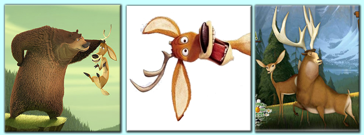

Сезон Охоты
Описание мультфильма: Выросший среди людей гризли оказывается в лесу в самый разгар охотничьего сезона. И пока ухаживавший за медведем егерь ищет своего воспитанника, гризли водит дружбу с лесным оленем. В тихом мирном лесу, населенном безобидными зверушками, открывается сезон охоты. На первый взгляд довольно неприятная неожиданность. Но два приятеля – домосед-гризли по имени Буг и однорогий олень Элиот решают объединить жителей леса для того, чтобы дать достойный отпор непрошеным гостям. 
Бэмби
Мультфильм начинается с рождения нового Принца леса — оленёнка Бэмби. Вместе со своими первыми друзьями — зайчонком Топотуном и его сёстрами — он учится ходить, говорить и знакомится с другими обитателями леса. Неожиданной для него становится встреча с Фэли́н — маленькой оленихой, которая находит общение с Бэмби весьма забавным занятием. Бэмби, однако, совсем не разделяет радости Фэлин. Бэмби встречается со своим отцом — Великим Князем леса — самым уважаемым оленем во всём лесу. Вслед за осенью приходит зима — самое трудное время в жизни Бэмби — но и она не длится вечно. Появляются первые лучи весеннего солнца, и Бэмби вместе с матерью снова отправляются на луг, где находят первую весеннюю траву. Увы, мирная прогулка заканчивается трагедией — пуля вновь появившегося охотника на этот раз всё-таки настигает мать Бэмби. Не разобравшись в том, что случилось, Бэмби тщетно пытается отыскать свою мать в погружающемся в ночную тьму лесу. Вместо матери он находит Великого Князя, который и сообщает ему горькую правду. Наступает весна, и старые друзья — Бэмби, Цветочек и Топотун — встречаются снова. Бэмби уже совсем не тот, что раньше — у него выросли рога, и из застенчивого и пугливого ребёнка он превращается в молодого оленя. Весна — период любви, и, встретившись со старой знакомой Фэлин, Бэмби влюбляется в неё. Однако, самая главная опасность ещё впереди — человек устраивает пожар. Превращённый в пепелище лес начинает перерождаться. Финальный аккорд мультфильма — рождение у Бэмби и Фэлин двух оленят, удивительно похожих на своих родителей. Поняв, что его время прошло, Великий Князь леса уступает своё место окончательно повзрослевшему Бэмби.
Серебрянное копытце
Жил в лесу охотник Кокованя. Изба у него была большая, крепкая, а жил он один. И решил он взять себе сиротку Даринку. А чтобы девочка хотела к нему идти, рассказал он ей сказку о чудо-козленке с серебрянным копытцем. Очень хотелось девочке его увидеть. И вот однажды, зимним вечером прибежал этот козлик. В каком месте топнет серебрянным копытцем – там и появится дорогой камень. Раз топнет – один камень, два топнет – два камня, а где ножкой бить станет – там груда дорогих камней. Давно это было, а и теперь на том месте люди камушки собирают, хризалитами называются. Видали?


© Кириллова Ольга 2013